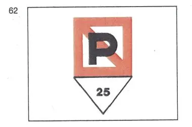

§ 3.33 Hinweis auf das Verbot des Stilliegens nebeneinander (Anlage 3 Bild 62)
Rheinschiffahrtspolizeiverordnung
1. | Sofern das seitliche Stilliegen in der Nähe eines Fahrzeugs zum Beispiel wegen der Art seiner Ladung durch andere Vorschriften oder durch besondere Anordnungen der zuständigen Behörde verboten ist, muß dieses Fahrzeug an Deck in der Längsebene führen: | |
eine quadratische Tafel, darunter eine dreieckige Zusatztafel. |  | |
Die quadratische Tafel ist auf beiden Seiten weiß mit rotem Rand und trägt einen roten Schrägstrich von links oben nach rechts unten und ein schwarzes "P" im Mittelfeld. Die dreieckige Zusatztafel ist auf beiden Seiten weiß und zeigt in schwarzen Zahlen die Entfernung in Metern an, innerhalb derer das Stilliegen verboten ist. | ||
2. | Bei Nacht müssen die Tafeln so beleuchtet sein, daß sie an beiden Seiten des Fahrzeugs deutlich sichtbar sind. | |
3. | Dieser Paragraph gilt nicht für die in § 3.21 genannten Fahrzeuge, Schubverbände und gekuppelten Fahrzeuge. |